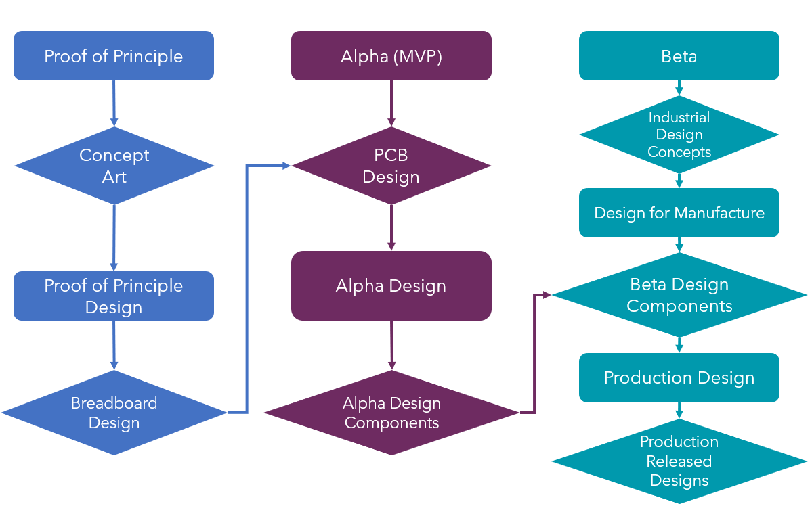

Design for Manufacturing (DFM)
The Path to Product
The goal of designing a product that fits all the customer requirements and looks good can be a daunting task if its not broken up into bite-sized pieces. The approach we take at Cerillo is a three-phased approach to design process. Projects defined and scoped by our product team are first prototyped and put through Proof of Principle testing. Once the core technology has been demonstrated work on an Alpha design commences, and the engineers create a first pass at a rough functioning form factor. After the Alpha prototype shows it can do everything we need the product to do, the designers move to the Beta design phase, where the engineers make the Alpha look and feel like a real product.
Here’s a flowchart that illustrates this approach.
